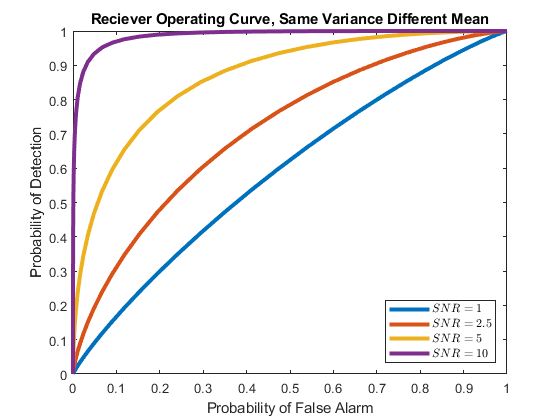
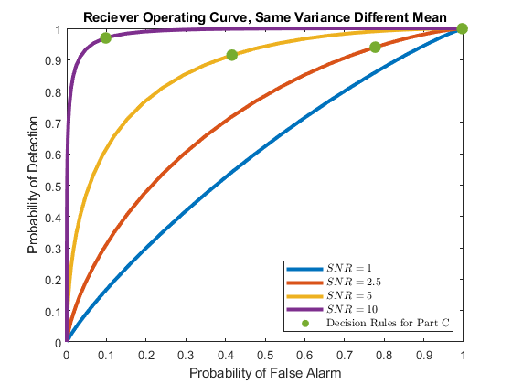
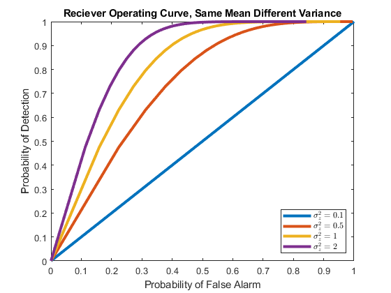

Part 1, Radar Detection
Dan Brody, I-An Huang, Nikita Teplitskiy
Contents
Consider a radar detection system, where we want to make a determination if a target is present or absent. If the target is present, Y = A + X, where A is a known constant. If the target is not present, Y = X. X is a zero mean Gaussian with variance sig^2. The a priori probability that the target is not present is .8. The signal to noise ratio is the ratio of A to sig^2, you must choose values for this exercise that give insightful results.
clc clear variables close all P0 = 0.8; P1 = 1 - P0;
Part A
Derive and implement in MATLAB the MAP rule for detecting the target. Run 1000 iterations of your detector; compare the probability of error with the theoretical probability of error.
A = 0.5; var = 0.1; M = 1000; % MAP rule detector % true for present, false for not present Gamma = A/2 + var.*log(P0/P1)./A; MAP_detector = @(y) y > Gamma; % theoretical probability of error P_err = (1 - qfunc((Gamma - A)/sqrt(var)))*P1 + ... qfunc(Gamma/sqrt(var))*P0 % experimental probability of error H = rand(1, M) > P0; Y = sqrt(var).*randn(1, M) + A.*H; P_err_exp = sum(MAP_detector(Y) ~= H)/M
P_err =
0.1450
P_err_exp =
0.1440
Part B
Implement a simulation that plots the receiver operating curve for this detector. Plot the receiver operating curve for several signal to noise ratios.
% probability of detection and false alarm % as a function of threshold Gamma, variance var, and mean A P_Detection = @(Gamma, var, A) qfunc((Gamma - A)./sqrt(var)); P_False_Alarm = @(Gamma, var) qfunc(Gamma./sqrt(var)); Gamma = linspace(-2, 3).'; A = [0.1 0.25 0.5 1]; var = [0.1 0.1 0.1 0.1]; P_D = P_Detection(Gamma, var, A); P_F = P_False_Alarm(Gamma, var); plot(P_F, P_D, 'LineWidth', 3) ylabel('Probability of Detection') xlabel('Probability of False Alarm') title('Reciever Operating Curve, Same Variance Different Mean'); legend({'$SNR = 1$','$SNR = 2.5$', ... '$SNR = 5$','$SNR = 10$'}, ... 'Location', 'southeast', ... 'Interpreter','latex');
Part C
Assume that missing the target is 10 times worse than falsely detecting the target. What is the decision rule that minimizes the conditional risk? Mark this point on your receiver operating curve for at least one SNR value.
% threshold eta = (1/10)(P0/P1) Gamma = A./2 + var.*log(P0/(10*P1))./A; P_D = P_Detection(Gamma, var, A); P_F = P_False_Alarm(Gamma, var); hold on scatter(P_F, P_D, 90, 'filled', 'DisplayName', 'Decision Rules for Part C')
Part D
Using the cost structure in part c), Select one SNR value and plot the value of the expected cost for a range of a priori target present probabilities from 0 to 1.
var = 0.1; A = 0.5; P1 = linspace(0.01, 0.99); % avoid 0 division % anonymous functions for defining expected cost thresh = @(P1) A/2 + var.*log((1 - P1)./P1)./A; P_MISS = @(P1) 1 - qfunc((thresh(P1) - A)./sqrt(var)); P_FALSE = @(P1) qfunc(thresh(P1)./sqrt(var)); exp_cost = @(P1) 10.*P_MISS(P1).*P1 + P_FALSE(P1).*(1 - P1); hold off plot(P1, exp_cost(P1), 'LineWidth', 3); ylabel('Expected Cost') xlabel('Target Present Probability') title('Cost Structure of Part C, SNR = 5');
Part E
Now, repeat parts a and b, but change the model such that the target present remains Y = A+X but the target not present model is now Y = A+Z where Z is a zero mean Gaussian random variable with ?2z > ?2. Plot a few receiver operating curves for different ratios of ?2z to ?2.
P1 = 1 - P0; A = 0; var = 0.1; var_z = 1; M = 1000; % MAP rule detector % true for present, false for not present Gamma = 2.*(var_z.*var./(var_z - var)).* ... log(sqrt(var_z./var).*P0./P1); MAP_detector = @(y) y.^2 < Gamma; % theoretical probability of error P_err2 = 2.*qfunc(sqrt(Gamma/var))*P1 + ... (1 - 2.*qfunc(sqrt(Gamma/var_z)))*P0 % experimental probability of error H = rand(1, M) > P0; Y = sqrt(var.*H + var_z.*(~H)).*randn(1, M) + A; P_err_exp2 = sum(MAP_detector(Y) ~= H)/M % probability of detection and false alarm % as a function of threshold Gamma and variances var and var_z P_Detection = @(Gamma, var) 1 - 2.*qfunc(sqrt(Gamma./var)); P_False_Alarm = @(Gamma, var_z) 1 - 2.*qfunc(sqrt(Gamma./var_z)); Gamma = linspace(0, 4).'; var = [0.1 0.1 0.1 0.1]; var_z = [0.1 0.5 1 2]; P_D = P_Detection(Gamma, var); P_F = P_False_Alarm(Gamma, var_z); plot(P_F, P_D, 'LineWidth', 3) ylabel('Probability of Detection') xlabel('Probability of False Alarm') title('Reciever Operating Curve, Same Mean Different Variance'); legend({'$\sigma_z = 0.1$','$\sigma_z = 0.5$', ... '$\sigma_z = 1$','$\sigma_z = 2$'}, ... 'Location', 'southeast', ... 'Interpreter','latex');
P_err2 =
0.4414
P_err_exp2 =
0.4590
